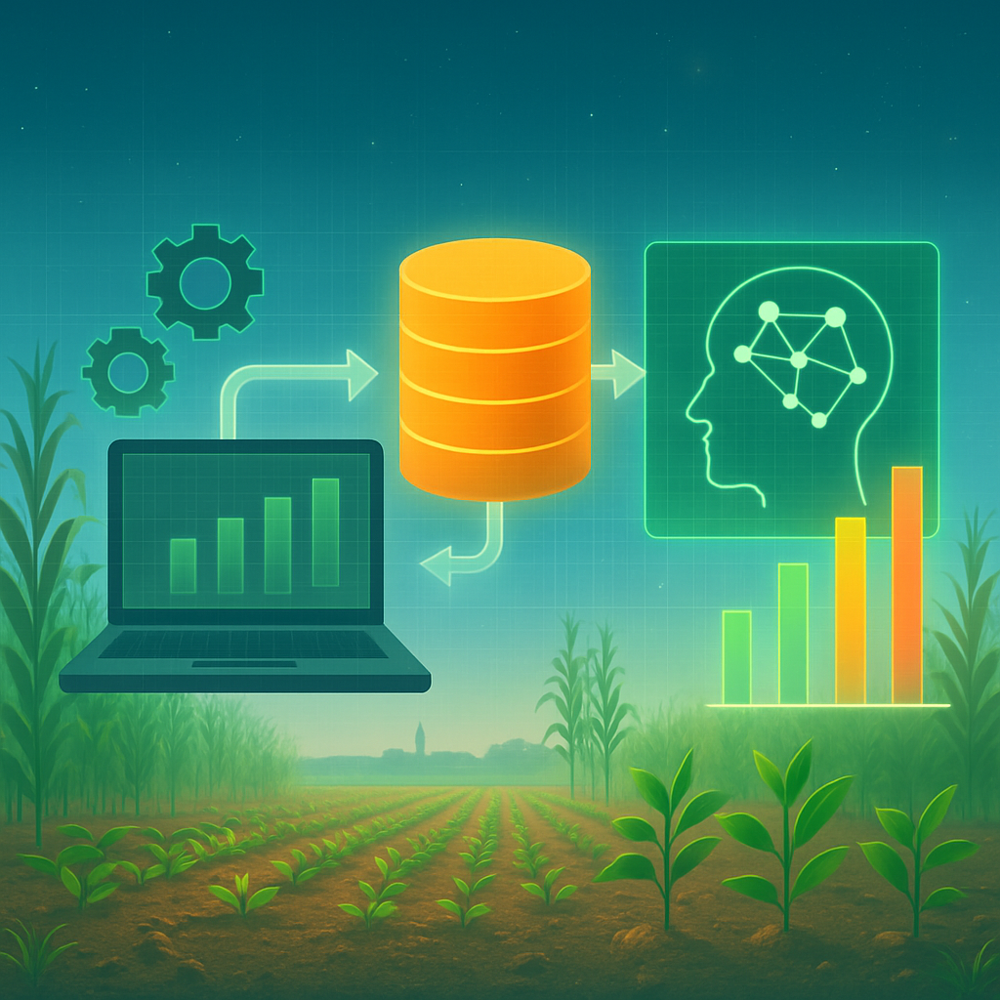

AI-based Crop Modelling and Data Engineering (FieldBigData Project)
Description: As part of the FieldBigData project at Wageningen University & Research (WUR), this work focuses on developing data engineering pipelines for AI-driven crop modelling. Using the APSIM (Agricultural Production Systems sIMulator) tool, large-scale agricultural simulations are generated and processed to extract only relevant variables for model integration. The goal is to support predictive models of crop growth and yield estimation using heterogeneous environmental and management data. This project bridges simulation modelling, data preprocessing, and machine learning, contributing to smarter agricultural decision support systems.
Date: August 2025 – Present
Python
APSIM
Data Engineering
AI Modelling
Crop Science